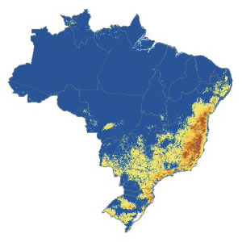

 openModeller aims to provide a flexible, user friendly, cross-platform environment where the entire process of conducting a fundamental niche modeling experiment can be carried out. The software includes facilities for reading species occurrence and environmental data, selection of environmental layers on which the model should be based, creating a fundamental niche model and projecting the model into an environmental scenario. A number of algorithms are provided as plugins, including GARP, Climate Space Model, Bioclimatic Envelopes, Support Vector Machines and others.
The project is currently being developed by the Centro de Referência em Informação Ambiental (CRIA), Escola Politécnica da USP (Poli), and Instituto Nacional de Pesquisas Espaciais (INPE) as an open-source initiative. It is funded by Fundação de Amparo à Pesquisa do Estado de São Paulo (FAPESP), the Incofish project, and by individuals that have generously contributed their time. Previous collaborators include the BDWorld project (University of Reading), the University of Kansas Natural History Museum & Biodiversity Research Center (KU), and other individual participants.